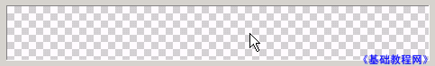
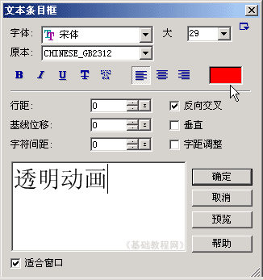
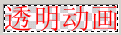
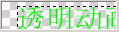
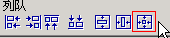

Ulead Gif Animator 基础教程
四、透明动画 返回
GIF动画还有一个特点，就是可以制作成透明的，这样就可以更好地跟背景融合在一起，下面我们来看一个简单的动画；
1、运行程序
1）在桌面双击Ulead Gif Animator图标，或者在文件夹中双击它的图标，就可以启动程序；
2）启动成功后，显示一个默认的空白文档，如果出现向导提示，点“关闭”；

2、制作动画
1）进入后默认是一个白色背景，按一下键盘上的Delete键，删除白色底色，显示出棋盘格图案，表示透明背景；

2）在工具箱中选择“文本”工具，在画布里点一下，在右下角的文本对话框中，输入“透明动画”四个字，颜色为红色，点“确定”返回；

3）点菜单“编辑－修整画布”命令，将多余部分画布裁切掉；

4）点下面帧面板中的“添加帧”按钮，添加一个空白帧，这一阵的背景也是透明的；
选择文本工具，在画布上点一下，然后输入“透明动画”，把颜色改成绿色；

5）选择箭头工具 ，在上边的对齐工具栏中，点最后面的那个按钮，把文字排列在画布中央；
，在上边的对齐工具栏中，点最后面的那个按钮，把文字排列在画布中央；

6）点菜单“文件－保存”命令，以“透明”为文件名，保存文件到自己的文件夹；
再点菜单“文件－另存为－Gif文件..”，也以“透明”为文件名，保存文件到自己的文件夹，这次保存的是是Gif图片文件；
本节学习了制作透明动画的基本方法，如果你成功地完成了练习，请继续学习下一课内容；
本教程由86团学校TeliuTe制作|著作权所有转载和引用本站内容，请保留版权信息和本站链接。